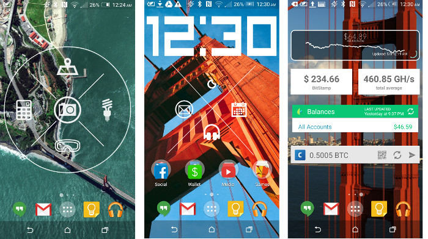

Welcome to the first installment of my Android home screen setup series. In this series I will post pictures and animations showing off my current home screen setup. A new entry to this series will be made whenever I make a major change in the layout.
One app makes most of my home screen customization possible. Zooper Widget Pro allows for unique widgets to be built from scratch and fully customized by the user. My use of Zooper Widget has resulted in everything from clock widgets, to custom themed calendars to stylized app launchers. While making your own widgets can result in the most customization it is also very time consuming and using Zooper’s build environment has a small learning curve. If you are not technically inclined or have don’t have hours to spend adjusting your custom widgets, Zooper includes several built-in templates and has the ability to download and use user generated widgets downloadable from the Google Play Store.
The other notable player in making this layout is MultiPicture Live Wallpaper pro. MultiPicture is an excellent customization tool that allows the user to set a custom wallpaper for each screen on the home screen. For people like me who like a theme throughout their phone or who can’t decide what wallpaper to use, this is the perfect compromise. The app also allows for several custom animations when scrolling between screens.
With that out of the way, let’s delve into my current layout (as of Spring 2015).

Main Screen
I began working on this layout after my trip to San Francisco and tour of Stanford and Google’s campus. I was fascinated with the mighty Golden Gate Bridge and collected a series of beautiful phone wallpapers that I assembled together using MultiPicture Live wallpaper. Using Zooper Widget Pro, I Made the very structured and rectangular digital clock on the main screen. The clock’s font compliments the straight and bold lines and structure of the photo of the Golden Gate. Below the clock I have a customized app launcher arranged in a very appealing “X” divider. The top icon of the widget is mutable and changes its icon to reflect the current weather conditions. The icon is also a launcher for HTC’s default weather app. This variable icon set is a default feature of Zooper. To the left is the stock email app launcher. Right is the launcher for my google calendar. And bottom, launcher for Poweramp Music Player. Below the X app launcher tray, are four folders containing my most commonly used apps.
If you’re curious, those apps include:
- Social (Facebook, LinkedIN, Pinterest, Facebook Messenger, Klout, Twitter, Cord, Instagram, Blogger, and Snapchat)
- Wallet (Cash, Google Wallet, Coinbase Bitcoin Wallet, Starbucks, Walgreens, camCard, Play Store, Acorns)
- Media (YouTube, Netflix, HTC TV Remote, Pandora, SoundCloud, Spotify)
- Games (Clash of Clans, aa, Bang, Circle, Don’t touch the Spikes, Dumb ways to die 1 and 2, ZigZag, Five Nights at Freddies, Hopeless, Reaper, Skyward, Daddy Long Legs, Jelly Jump, Bruh Button, Monument Valley)
Utilities
The leftmost screen has a very “material designesque” aerial photo of the Golden gate with another “X” divider app launcher. However, this one has a more circular motif. With Google Maps at the top, calculator on the left, flashlight on the right, Google Goggles at the bottom and HTC’s stock camera app in the middle, this all-in-one app launcher serves as a quick launch utility just a swipe away from the main screen.
Finance
The rightmost screen has a very vertically oriented photo of the Golden Gate’s strut. To contrast the vertical lines composing the wallpaper are several horizontally aligned widgets that provide live updates to all things financial. Starting at the top, Acorns investing shows my current account balance and line graph depicting the recent market conditions. Below that I have my current Bitcoin hashing rate and current bitcoin price displayed by the dedicated app for Slush’s mining pool. Next to the bottom, is the accounts summary for Mint, my personal finance manager. And last but not least, my Coinbase wallet balance, sitting comfortably at about 0.5 BTC at the moment.
Well that's it. I hurried to make this post since my Pebble Time will be arriving soon this month and I suspect that many of my widgets on my phone are likely to become less-used with the added functionality and ease of use that comes with a smartwatch. My setup is likely to change in the near future so keep up for the next instalment.